어깨를 가볍게 두드리며 "괜찮으세요?" 라고 크게 물어봅니다. 반응이 없으면 심장정지를 의심합니다.
2
119 신고 + AED 요청 (호흡 확인보다 먼저)
일반인은 호흡 상태 판단이 어려우므로, 반응이 없으면 호흡을 확인하기 전에 즉시 119에 신고합니다. 스피커폰을 켜고 구급상황요원의 안내를 따르세요. 주변에 사람이 있으면 신고와 AED 요청을 나눠서 부탁합니다.
3
호흡 확인 (구급상황요원과 함께)
숨을 쉬는지, 정상 호흡인지 확인합니다. 숨을 안 쉬거나, 헐떡이는 비정상 호흡(심장정지 호흡)이면 심장정지로 판단하고 즉시 가슴압박을 시작합니다.
4
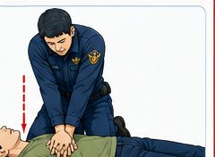
가슴압박 — 위치와 자세
복장뼈(가슴뼈) 아래쪽 절반 지점에 한 손 손꿈치를 대고, 다른 손을 그 위에 겹쳐 깍지를 낍니다. 팔꿈치를 곧게 펴고 체중을 실어 수직으로 압박합니다. 주로 쓰는 손이 아래로 가는 것이 좋습니다.
5
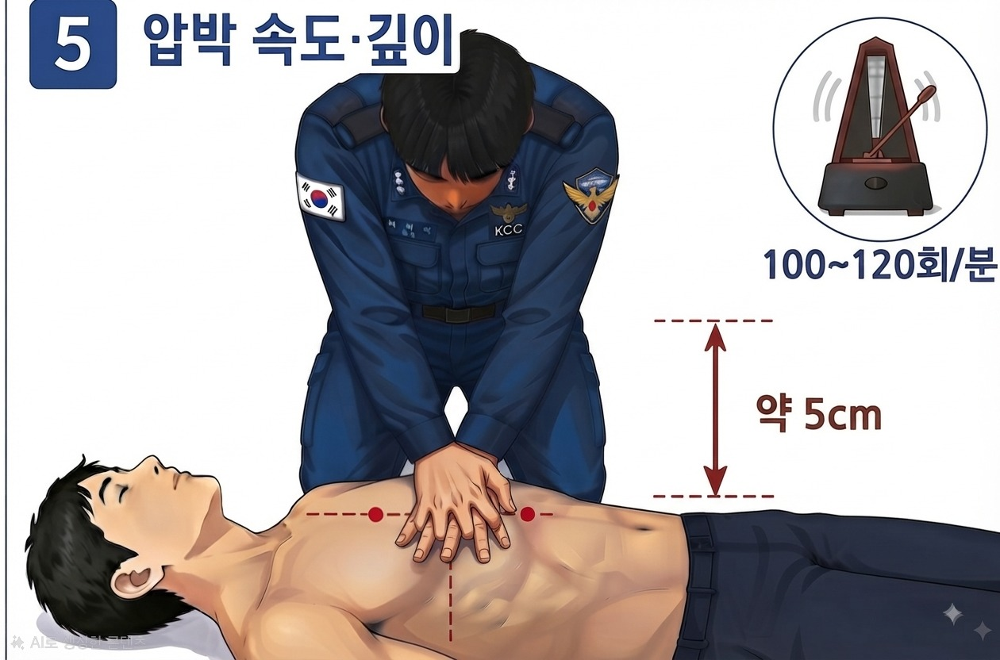
압박 속도 · 깊이
분당 100~120회 속도로, 약 5cm 깊이(6cm는 넘지 않게)로 압박합니다. 매번 압박 후에는 가슴이 완전히 원래대로 올라오도록 힘을 뺍니다(이완). 위 메트로놈 버튼으로 속도를 맞춰볼 수 있습니다. 2분마다 압박하는 사람을 교대하면 좋습니다.
6
인공호흡 (교육받았고 할 수 있으면)
가슴압박 30회 : 인공호흡 2회 비율로 반복합니다. 머리를 뒤로 젖히고 턱을 들어 기도를 연 뒤, 1초간 가슴이 올라올 정도로 불어넣습니다. 인공호흡을 못하거나 꺼려지면 압박만 계속해도 괜찮습니다(가슴압박소생술) — 아무것도 안 하는 것보다 훨씬 낫습니다.
7
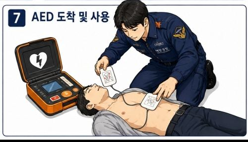
AED 도착 즉시 사용 + 반복
AED가 도착하면 즉시 사용합니다(사용법은 옆 탭). 구급대가 도착하거나, 환자가 움직이거나, 정상적으로 숨을 쉴 때까지 압박과 인공호흡을 반복합니다.
환자가 반응은 없지만 정상적으로 숨을 쉬고 있다면, 옆으로 눕혀 기도가 막히지 않게 하는 회복 자세를 취해주고 구급대를 기다립니다.
출처: 2025년 한국 심폐소생술 가이드라인 (질병관리청·대한심폐소생협회)
⚠️ 어떤 상황에서도 구조자 본인이 직접 물에 뛰어드는 것은 최후의 수단입니다. "도구를 이용해 닿기(Reach) → 던지기(Throw) → (배가 있으면) 저어가기(Row) → 직접 들어가기(Go)" 순서로 시도하세요.
🛟 구명환
1
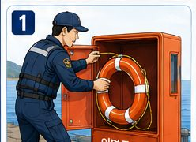
발견 즉시 큰소리로 주변에 알리고 119에 신고합니다.
2
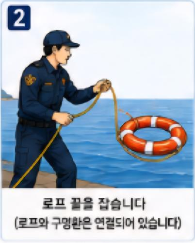
구명환에 연결된 줄 끝을 발로 밟거나 손에 단단히 감아쥔 뒤, 대상자보다 바람이나 물살이 흘러오는 방향(상류) 쪽에서 던질 준비를 합니다.
3
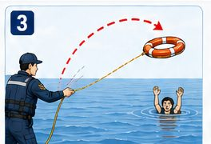
대상자의 몸 쪽 또는 살짝 넘어가도록 던져서, 대상자가 팔을 뻗어 구명환을 잡거나 몸에 걸칠 수 있게 합니다.
4
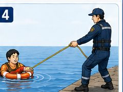
대상자가 구명환을 양팔로 안거나 팔을 끼우게 한 뒤, 천천히 끌어당겨 안전한 곳으로 이동시킵니다.
🦺 구명조끼 착용법
구명조끼는 정확하게 착용해야 제 역할을 합니다. 특히 다리끈을 채우는 것이 핵심입니다 — 안 채우면 조끼가 위로 벗겨질 수 있습니다. 물에 들어가기 전 아래 7단계를 반드시 확인하세요.
1
체격에 맞는 사이즈인지 확인
조끼를 펼쳐서 몸에 대보고 크기를 확인합니다. 너무 크면 물에 빠졌을 때 조끼만 위로 벗겨져 얼굴이 물에 잠길 수 있습니다. 어린이는 반드시 체중에 맞는 유아·아동용을 사용하세요.
2
머리 위로 뒤집어 입기
앞여밈이 없는 형태는 머리 위로 뒤집어써서 입습니다. 입은 뒤 앞면이 몸 중앙에 잘 맞는지, 목 부분이 턱을 밀어올리지 않는지 확인합니다.
3
지퍼(앞여밈)를 끝까지 잠그기
지퍼나 버클을 맨 위까지 완전히 채웁니다. 중간까지만 잠그면 물살에 벌어져 조끼가 벗겨질 수 있습니다.
4
가슴·허리 스트랩 전부 채우고 조이기
가슴 → 허리 순서로 모든 버클을 채운 뒤, 양쪽 끈을 바깥으로 당겨 몸에 밀착시킵니다. 손가락 한두 마디가 들어갈 정도가 적당합니다.
5
⚠️ 다리끈(가랑이끈) 반드시 채우기 — 가장 중요
다리끈은 선택이 아니라 필수입니다. 다리끈을 안 채우면, 물에 빠졌을 때 조끼가 몸통을 타고 위로 밀려 올라가 얼굴까지 덮거나 벗겨질 수 있습니다 — 실제 익수 사고에서 구명조끼가 제 역할을 못 하는 가장 흔한 원인입니다. 다리끈을 양쪽 다리 사이로 통과시켜 위로 당겨온 뒤, 몸에 딱 맞게 버클로 고정하세요.
6
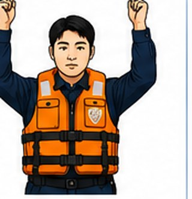
양팔을 위로 들어 당겨보기
착용을 마치면 양팔을 위로 쭉 들어올려 봅니다. 조끼가 제자리에 있으면 정상(OK). 턱이나 귀까지 밀려 올라오면 너무 헐거운 것(NG)이니 스트랩(특히 다리끈)을 더 조이고 다시 확인하세요.
7
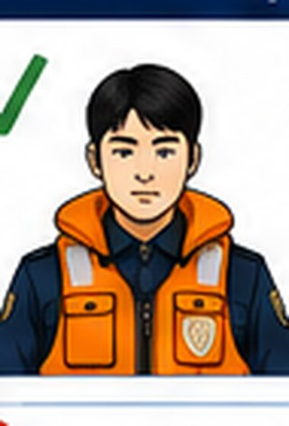
최종 점검
✔ 버클이 모두 제대로 잠겼는지 ✔ 스트랩이 꼬이지 않았는지 ✔ 몸을 움직여도 조끼가 밀착돼 있는지 ✔ 다리끈이 반드시 채워져 있는지(가장 중요) 어깨를 눌러봤을 때 귀가 옆으로 눌리지 않고 움직임이 편안하면 올바른 착용입니다.
출처: 해양경찰청 구명조끼 착용법
🎯 드로우백 (구명로프)
1
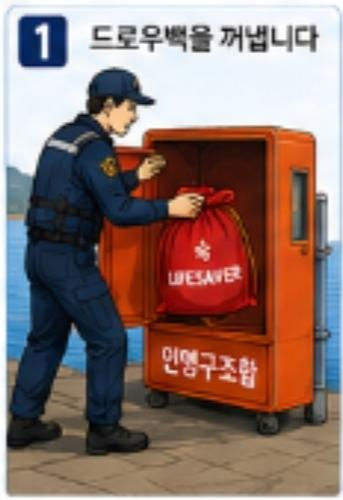
가방을 열어 로프가 코일 형태로 가지런히 들어있는지 확인합니다(엉켜있으면 던졌을 때 안 풀립니다).
2
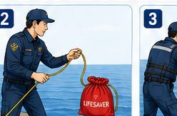
가방 반대쪽 로프 끝을 자기 손목이나 손에 확실히 고정합니다.
3
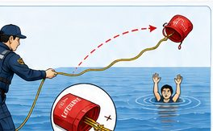
대상자를 향해 언더핸드로 가방을 던집니다. 대상자 몸 쪽이나 살짝 넘어가게 던지는 게 좋습니다.
4
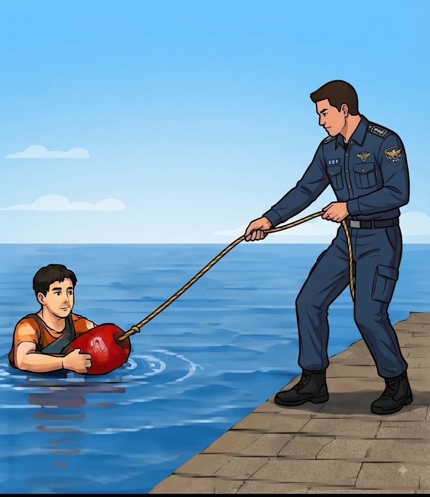
대상자가 로프를 양손으로 잡으면, 자신은 낮은 자세를 유지한 채 천천히 끌어당깁니다(끌려 들어가지 않도록 주의).
1
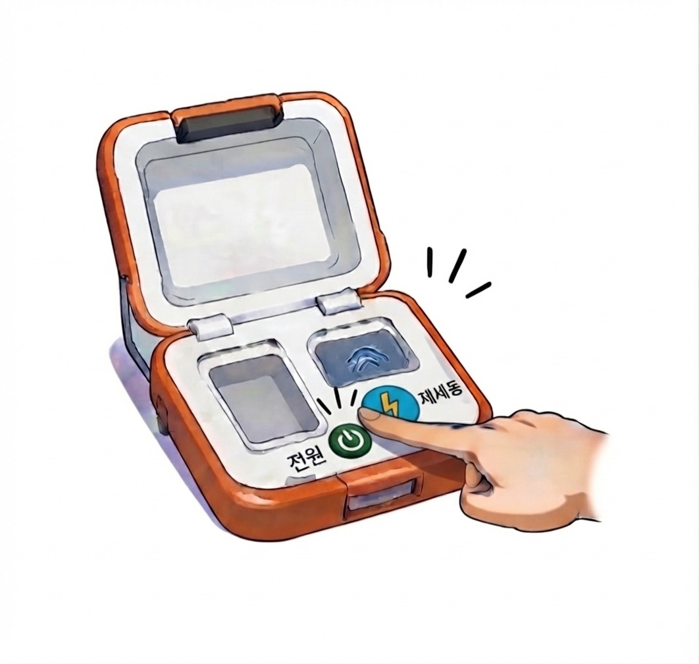
전원 켜기
심폐소생술을 방해하지 않는 위치에 AED를 놓고 전원 버튼을 누릅니다. 이후 음성 안내를 따라갑니다.
2
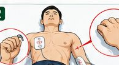
패드 부착 (맨 가슴에)
상의를 벗기고 패드 포장지 그림대로 오른쪽 빗장뼈 아래와 왼쪽 젖꼭지 아래 옆구리 쪽에 단단히 붙입니다. 여성도 브래지어를 벗길 필요 없이 위치만 조정해 가슴 조직을 피해 부착하면 됩니다(2025년 지침).
3
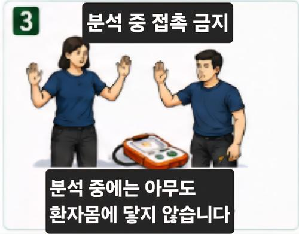
심전도 분석 중 — 접촉 금지
"분석 중입니다"라는 안내가 나오면 아무도 환자 몸에 닿지 않아야 합니다. 환자가 움직이지 않게 합니다.
4
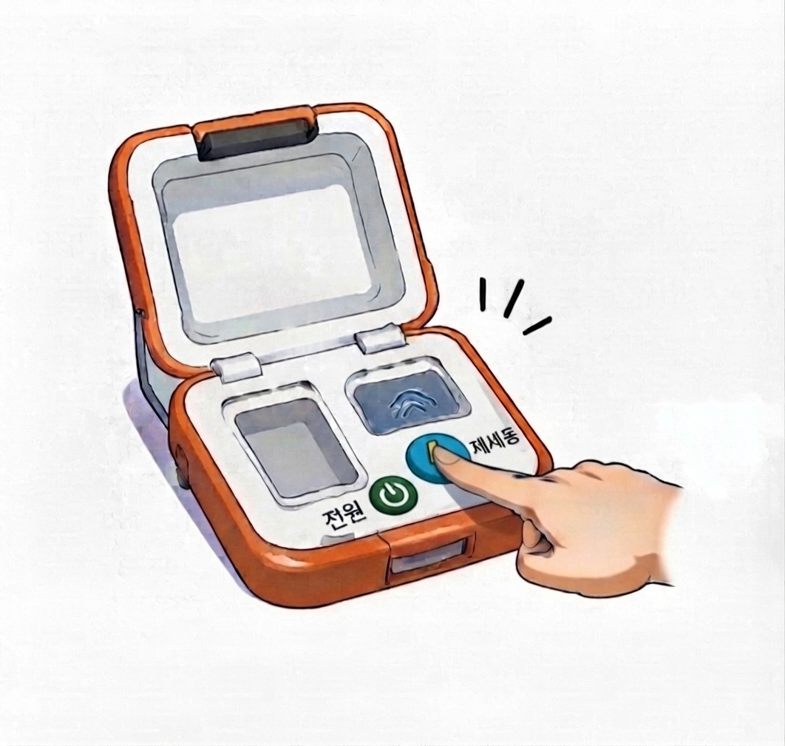
필요시 제세동 (충격) 버튼
"제세동이 필요합니다"라는 안내가 나오면, 모두 환자에게서 떨어졌는지 확인한 뒤 깜빡이는 버튼을 누릅니다. "필요하지 않습니다"라고 안내되면 그대로 다음 단계로 넘어갑니다.
5
즉시 가슴압박 재개
충격을 주었든 안 주었든, 곧바로 가슴압박을 다시 시작합니다. AED는 2분마다 자동으로 심전도를 다시 분석합니다. 구급대가 도착할 때까지 반복합니다.
출처: 2025년 한국 심폐소생술 가이드라인 (질병관리청·대한심폐소생협회)
관리자 모드ADMIN
신규입력
대량입력
대량수정
수정요청
변경이력
지도에서 주황색 아이콘을 드래그하거나 지도를 클릭하면 아래 위도/경도 칸에 자동으로 채워집니다. 물론 위도/경도를 직접 타이핑해도 되고, 그러면 지도 위 아이콘도 그 자리로 같이 옮겨갑니다.
엑셀 업로드: 첫 행은 머리글로 취급됩니다. 열 이름은 위도, 경도, 주소, 비고 (또는 lat, lng, addr, note) 중 하나로 인식합니다.
직접 붙여넣기: 한 줄에 하나씩, 위도,경도,주소 (쉼표 구분) 예) 37.791666,128.922927,강동면 안인진리 159-60
엑셀 하나로 신규/수정/삭제 처리: ① 먼저 내보내기로 현재 목록을 받으면 구분 열이 같이 나옵니다.
· 기존 항목을 고치려면: id는 그대로 두고 값만 수정 (구분은 비워도 됨)
· 새로 추가하려면: 새 줄에 id는 비워두고 위도·경도·주소만 입력 (구분에 "신규"라고 써도 되고 안 써도 됨)
· 삭제하려면: 그 줄의 구분 칸에 "삭제"라고만 입력 (다른 값은 안 건드려도 됨)
다 고친 뒤 다시 업로드하면 한 번에 반영됩니다. id 열은 지우거나 다른 값으로 바꾸지 마세요.
전체 0건 중 검색으로 좁혀서 편집하는 걸 권장합니다(한 번에 너무 많이 그리면 느려질 수 있음). 셀을 직접 눌러 값을 고친 뒤 아래 보이는 항목 저장을 눌러야 반영됩니다. 🗑 로 개별 삭제.
주소
위도
경도
비고
일반 사용자가 보낸 수정/신규제보/삭제신고입니다. 사진·사유·제안 위치를 확인하고 승인/반려하세요. 자동승인된 건은 여기 안 뜨고 이미 반영된 상태이며 변경이력 탭에서 확인 가능합니다.
민간인이 제출한 모든 수정/신규/삭제 건의 전체 기록입니다(자동승인·관리자승인·반려 포함). 사유와 사진이 함께 보관됩니다.